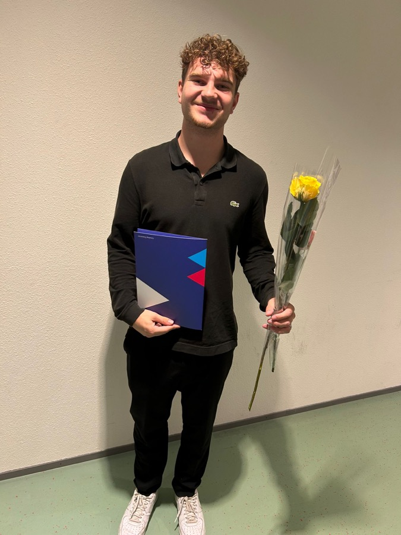

Waar drie tests hetzelfde zeggen, zit iets echts.
Ik deed drie reflectietests die elk vanuit een andere hoek kijken. Niet de labels waren interessant, maar de overlap.
16Personalities
INTP-A, de Logicus. Analytisch, nieuwsgierig en zelfstandig: "Confident Individualism".
123test (Holland)
Praktisch. Avontuurlijk, graag onderweg en zelfstandig. Niet het type dat je bij CE verwacht, en juist daarom interessant.
Yourself 1st
Adventurous Explorer. Spontaan (70%), creatief (50%), sociaal verbinder (30%).
De rode draad
| Thema | 16Personalities | Beroepentest | Yourself 1st |
|---|---|---|---|
| Vrijheid boven structuur | 61% onderzoekend | Zelfstandig, onderweg | 70% spontaan |
| Nieuwsgierigheid | 59% intuïtief | Avontuurlijke instelling | Nieuwsgierig als kern |
| Zelfstandig werken | Confident Individualism | Zelfstandigheid | Eigen weg kiezen |
| Sociaal is niet de motor | 51% introvert | Mensgericht niet hoogst | Social Connector 30% |
Vrijheid is mijn kracht én mijn valkuil
Alle drie de tests noemen in één adem: uitstellen, afdwalen en moeite met afronden. Dat herken ik. Bij Neuromarketing kwam ik via een heel andere route op hetzelfde uit: mijn grootste frictie is dat ik dingen elke keer opnieuw moet besluiten.
Het is geen nieuw inzicht. Na het SPM-bureau in jaar 2 schreef ik al dat ik taken uitstelde en dat ik me daar uiteindelijk aan ergerde. In mijn PB-contract maakte ik er toen een meetbaar doel van: 75% van mijn taken afronden binnen de geplande tijdsblokken.
Mijn omgeving kent het inmiddels ook: ik ben een beetje koning uitstel. Als ik eerlijk ben, weet ik ook waarom. Ik weet dat ik het uiteindelijk toch doe, en meestal goed. Juist dat vertrouwen maakt dat ik te laat begin. En ik kan net zo genieten van een dag niks doen als van een dag keihard werken, al geeft dat laatste me veel meer voldoening.
Ik kan dat niet alleen als sterkte presenteren. Wat wel werkt:
Concrete lijsten
Een lijst die ik kan afwerken, zodat ik niet steeds zelf hoef te bedenken wat er nu moet.
Vaste blokken
Vaste momenten voor werk, zodat het geen dagelijkse beslissing meer is.
Harde deadlines
Tussendeadlines, ook als die niet verplicht zijn.
Wat zo'n test wel en niet zegt
Het zijn zelfrapportages. Ze meten mijn zelfbeeld, niet per se mijn gedrag.
Vier letters versimpelen. 51% introvert is eigenlijk "er tussenin", daarom gebruik ik liever de percentages.
Herkenbaar is geen bewijs. Veel omschrijvingen passen op bijna iedereen (het Barnum-effect). Daarom neem ik alleen de punten serieus waar meerdere tests hetzelfde zeggen.
Van jaar 1 naar jaar 4
- Jaar 1 · 2023–2024
Kennismaken
Start Commerciële Economie. Eerste portfolio, Belbin (Brononderzoeker) en kernkwadranten. Afgesloten met mijn propedeuse.

- Jaar 2 · 2024–2025
Sportmarketing ontdekken
Sponsormatch, Ajax Vrouwen, het Central Athlete-event en citymarketing voor de Vendée. Keuze voor sportmarketing.
- Jaar 3 · 2025–2026
De praktijk in
Stage bij Golfbaan Dirkshorn en de minor Gen-AI Driven Marketing Communicatie.
- Jaar 4 · nu
Afstuderen in zicht
Project 9 voor Alkmaar Sport, Neuromarketing en Personal Branding. Op zoek naar een afstudeerplek.
Hoe anderen mij zien
Wie ik ben, kan een test niet beslissen. Daarom laat ik ook mensen aan het woord die met mij gewerkt hebben: mijn bedrijfsbegeleider, de opdrachtgevers van mijn stage en medestudenten.
Mijn bedrijfsbegeleider bij Golfbaan Dirkshorn
Op bijna alle punten beoordeelde hij me met 'zeer goed'. Een paar van zijn opmerkingen:
"Mooie projecten opgeleverd waar we echt wat aan hebben."
Over mijn werk tijdens de stage, met het Trackman-onderzoek als uitschieter.
"Lijkt zich een medewerker te voelen."
Over hoe ik me binnen het bedrijf opstelde. Hij noemde ook dat ik zelf initiatief neem en dat de presentatie voor het bestuur makkelijk ging.
"Kan nog groeien in het gebruik van de agenda."
Zijn eerlijke verbeterpunt, samen met: bronnen en cijfers altijd dubbel checken. Het past precies bij mijn valkuil, en daarom werk ik nu met vaste blokken en tussendeadlines.
"Enthousiast gesprek, leuk om naar te luisteren."
Medestudenten over mijn diepte-interview met ondernemer Jip Beerse (jaar 2). Hun tip: nog beter doorvragen op wat interessant is.
"Meer vervolgvragen, minder vasthouden aan je lijstje."
Klasgenoten na de oefenfocusgroep voor Ajax Vrouwen. Bij de echte focusgroep stelde ik daarom meer vervolgvragen.
"Maak de website persoonlijker."
Feedback op mijn vorige portfolio. Deze site is mijn antwoord: geen overzicht per studiejaar, maar een verhaal over wie ik ben en wat ik kan.
Kennismaken?
Ik hoor graag van je.